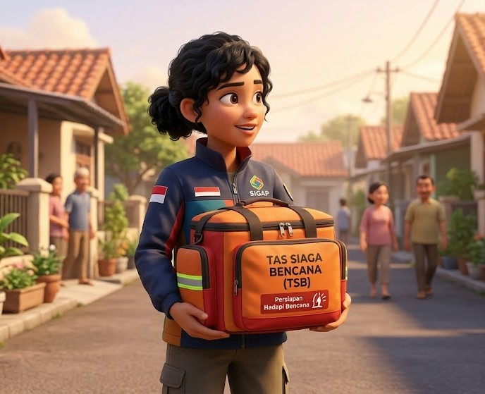

Pengetahuan adalah pertahanan terbaik. Simulasi dan edukasi interaktif untuk memastikan Anda dan keluarga siap menghadapi segala skenario cuaca ekstrem.
Langkah preventif sebelum intensitas hujan meningkat.
Tindakan cepat saat wilayah mulai tergenang air.
Proses sterilisasi dan pemulihan setelah air surut.

Siapkan atau Klik item di bawah ini untuk menandai barang yang sudah Anda masukkan ke dalam tas evakuasi. Pastikan semua logistik siap!
Curah hujan rendah. Wilayah dalam kondisi stabil. Tetap jaga kebersihan saluran air.
Hujan intensitas sedang terdeteksi. Mulai amankan barang berharga ke tempat yang lebih tinggi.
Intensitas hujan tinggi (>50mm). Segera lakukan evakuasi sesuai arahan petugas.